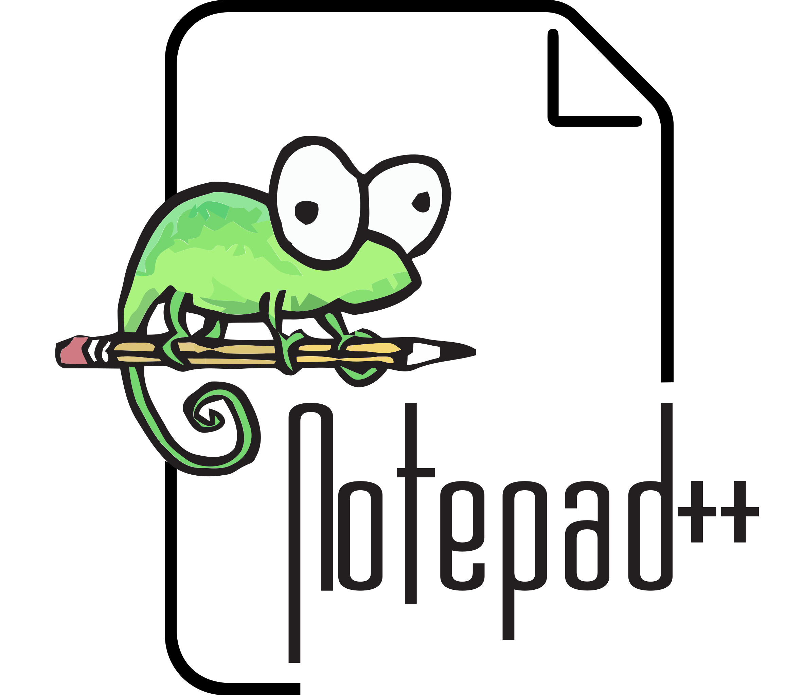

Вступление
Мы предоставляем информацию о лучших редакторах кода, их особенностях и преимуществах. Наши редакторы поддерживают подсветку синтаксиса, автозаполнение кода и другие функции, которые делают процесс программирования более удобным и эффективным.
Рассматриваемые редакторы
Visual Studio Code
Это один из самых популярных редакторов кода, который предлагает обширный набор расширений и тем для настройки. Он поддерживает множество языков программирования и имеет встроенную поддержку Git.
Sublime Text
Легкий и быстрый редактор кода с интуитивно понятным интерфейсом. Sublime Text поддерживает плагины и темы, а также предлагает мощные функции редактирования.
Brackets
Brackets — это редактор кода с открытым исходным кодом, разработанный специально для веб-разработчиков. Он предлагает функции, такие как живой просмотр, поддержка различных языков и интеграция с системами управления версиями.
Vim
Vim — это мощный текстовый редактор, который широко используется программистами благодаря своей гибкости и настраиваемости. Он может показаться сложным для новичков, но предоставляет мощные инструменты для редактирования текста и навигации по файлам.
Notepad++
Notepad++ — это бесплатный редактор с открытым исходным кодом для Windows, который поддерживает множество языков программирования и предлагает функции подсветки синтаксиса, автозаполнения и макросов.
Сравнительная таблица редакторов
| Редактор | Платформа | Поддержка языков |
|---|---|---|
| Visual Studio Code | Windows, macOS, Linux | Множество языков |
| Sublime Text | Windows, macOS, Linux | Множество языков |
| Brackets | Windows, macOS, Linux | HTML, CSS, JavaScript |
| Vim | Windows, macOS, Linux | Множество языков |
| Notepad++ | Windows | Множество языков |